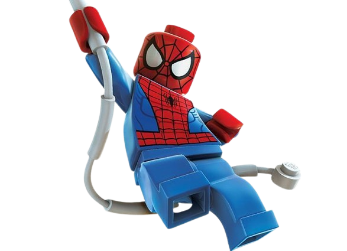
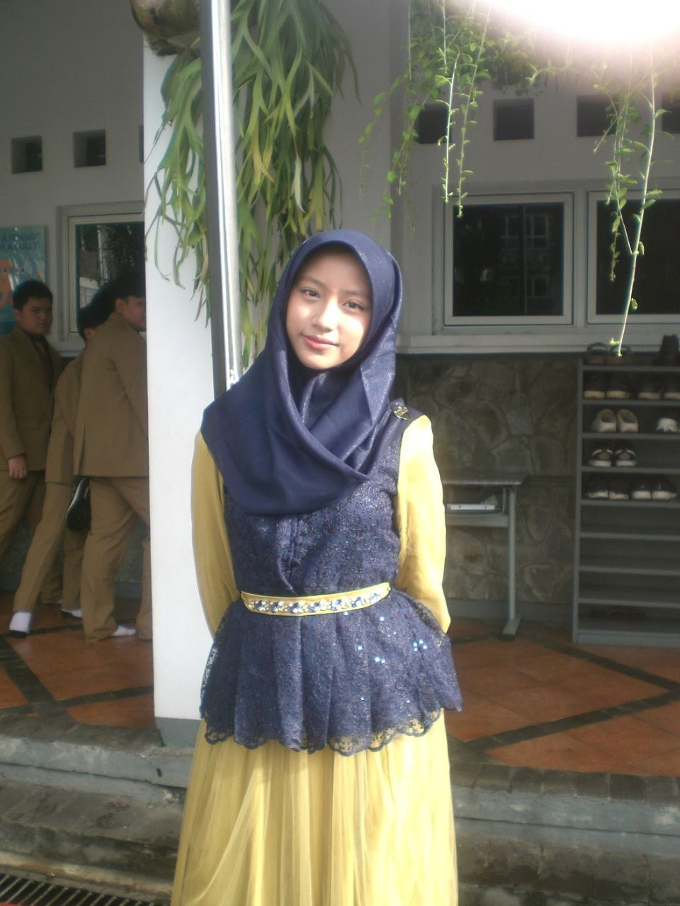
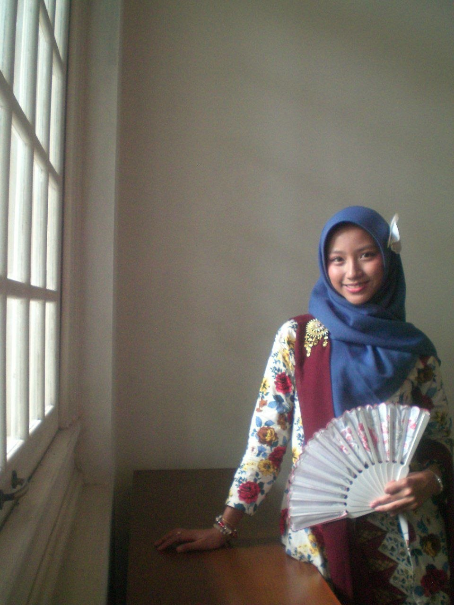
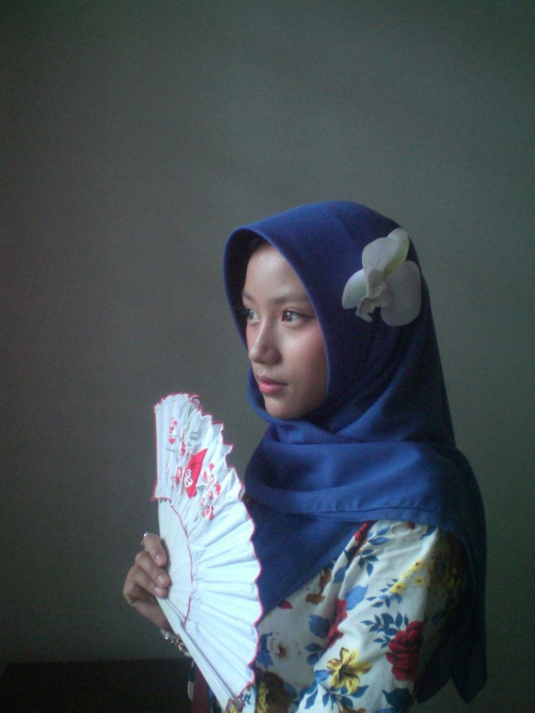
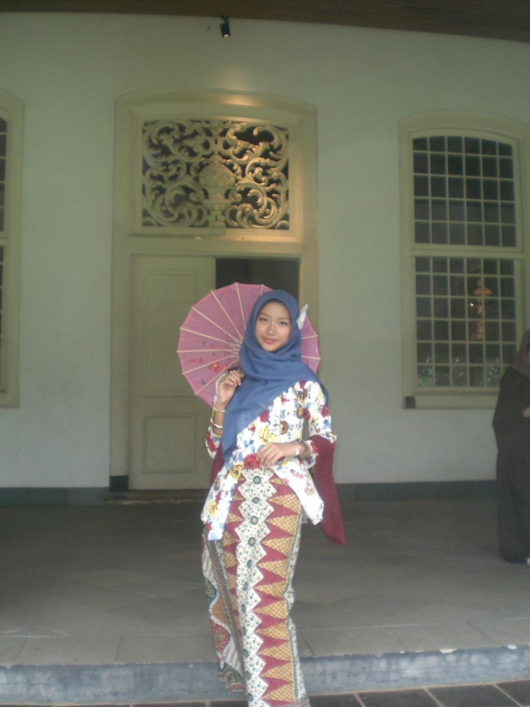
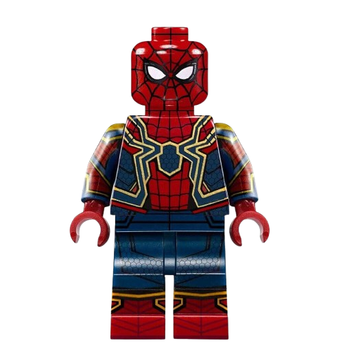

Mastering the Game of Life • SMPIT Al Haraki






(Aqilla Habibatuz Zahra, 9 Al Araf, SMPIT Al Haraki)
Saya adalah anak yang penuh rasa penasaran, pekerja keras, dan memiliki ambisi didalam hidup. saya selalu merasa tertantang dengan hal baru yang belum pernah saya eksplor. Saya juga seorang anak yang gemar mempelajari bagaimana cara dunia bekerja. itulah yang mendorong saya untuk mengeksplor hal baru seperti fashion baru, tempat baru, kegiatan baru, hobi baru dan teman teman baru. Walaupun begitu saya tidak selalu menginginkan sesuatu yang monoton, saya menyukai hal hal unik sehingga hal tersebut juga bisa menjadi salah satu identitas ataupun ciri khas saya.
Saya adalah anak yang menyukai tantangan, saya selalu merasa tertantang dengan hal baru. Itulah mengapa saya gemar memasak dan mencoba hal baru, saya suka mengeksplor menu baru, fashion baru . Saya tertarik dalam mempelajari bagaimana cara dunia bekerja.
Cita cita saya adalah menjadi seorang pebisnis muda yang tidak hanya sukses, tapi juga menjadi manusia yang bisa bermanfaat bagi diri sendiri, orang sekitar, serta nusa dan bangsa. Saya ingin mempekerjakan diri sendiri sekaligus membuka peluang pekerjaan untuk orang lain.
9 tahun berharga saya habiskan untuk belajar di SIT Al Haraki. Dari SD sampai SMP, dari belajar menulis sampai bisa menulis teks argumen sendiri. Selama itu saya selalu berusaha menjadi diri yang lebih baik setiap harinya, berusaha agar selalu ada yang dipelajari setiap harinya. Perasaan itu semakin kuat setelah saya duduk di bangku kelas IX. Saya mendapat banyak ilmu dan pengalaman. Selama di kelas IX saya menyadari bahwa semakin menumpuk tugas yang diberikan dan betapa padat jadwal yang dijalani, namun itulah yang membangun saya. Segala ilmu, tugas, kegiatan, nasihat, kesulitan bahkan pertengkaran membantu saya menyusun kembali diri saya menjadi Aqilla yang lebih baik di kesokan harinya. Tidak hanya dari pelajaran di kelas, saya banyak belajar tentang tanggung jawab, menejemen waktu, dan betapa pentingnya menghargai. Saya tidak hanya belajar dari guru, saya juga belajar dari teman teman saya, dari orangtua saya, bahkan dari staff sekolah lain.
Saya harap apa yang saya dapat di kelas IX ini bisa bermanfaat untuk hari esok dan hari hari yang akan datang. Saya harap SMPIT Al Haraki bisa terus memberikan ruang belajar yang nyaman untuk anak anak di kelas IX. Semoga setiap kelas di kelas IX bisa memberikan suasana kekeluargaan yang hangan bagi setiap muridnya seperti yang saya rasakan.